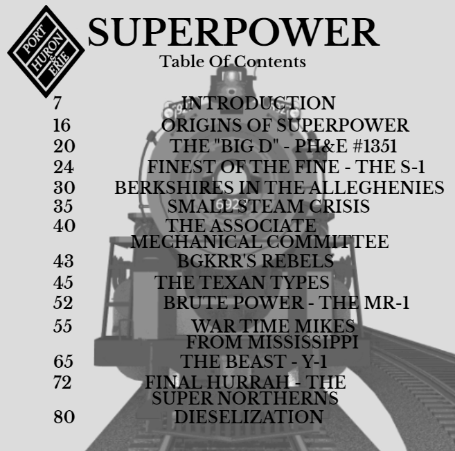
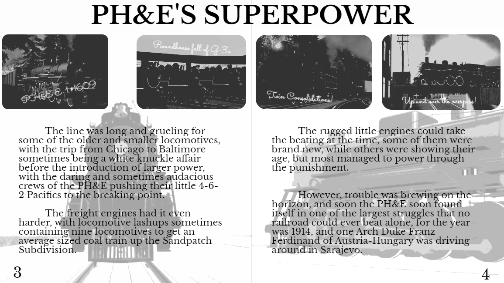
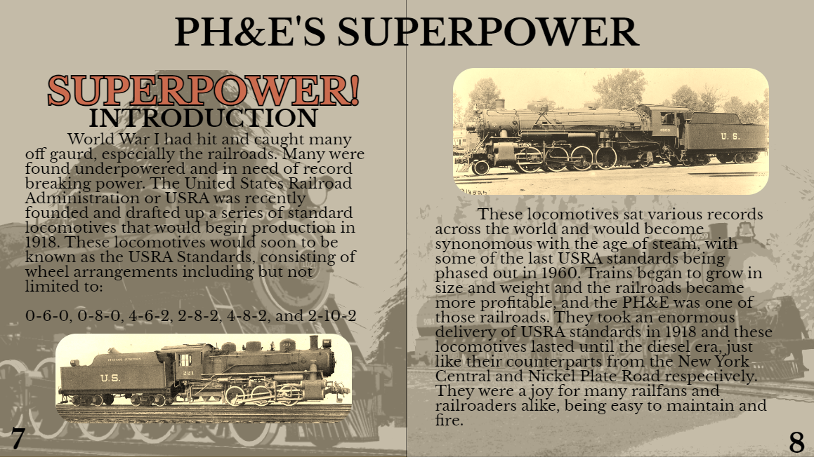

Port Huron & Erie's Superpower Magazine
The of Steam & It's Master
During the 1950s, steam on the Port Huron & Erie railroad based in Lansing, Michigan was beginning to meet its end. However, despite this, the railroad’s iconic superpower steam locomotives were a very popular sight for many rail fans who sought out to catch the last remnants of big steam in the Great Lakes. With that popularity, many began to collect old war posters and railroader magazines for sentimental reasons or to model some of the famous locomotives that roamed the steel trail, and one Alton Brown managed to document and collect over six hundred examples of the PH&E’s company advertisements and archives. Brown used to work for the PH&E’s Sandpatch Subdivision and the aptly nicknamed “Racetrack” between Buffalo and Chicago, where locomotives allegedly hit almost 130 miles per hour on the speedometer in some spots, and he wanted to preserve the legacy of the PH&E’s vast steam fleet while also providing references and a basic guide of information of each big locomotive class the railroad had to offer. With the release of the first spotter's guide of PH&E Superpower Steam in 1966, modelers from all over the Great Lakes finally had a reference of material to model every single large steam locomotive the road had to offer. However, Alton Brown passed away one year later in 1967, and future magazines and guides could no longer be made, such as a magazine covering the PH&E's switcher power and its most famous example, 1251.
The Beginning of a Magazine
After Brown's passing, the PH&E soon saw dollar signs in their eyes and asked Brown's family if they could snag his collection in order to produce more modeling guides and written books, they agreed. In 1968, the new, revised version of the superpower guide as well as four new magazines covering the switching power, small steam, pre-reformation records, and diesel modification packages were released officially by the Port Huron & Erie. These new magazines were four times longer than the proceeding copies made by brown, and even included the basic diagrams of every steam locomotive the PH&E ever owned, and their shop records housed in the glossary. These magazines became the premier modeling guide for steam in the Great Lakes, and the modeling community would take full advantage of them. In 1970, Tenshodo and PFM Brass would release the first scale models of the PH&E's famed L-1 class of 4-8-4's to the public, and would soon become one of the best selling brass models of all time. Larger, die-cast model makers such as Lionel and MTH also caught wind, and made special tooling for many Port Huron & Erie steam locomotives throughout the 1990's and 2000's.
Some of What was Covered
The Magazine would cover all kinds of things, from locomotives and rolling stock to buildings and bridges, the magzaine covered. It wasn't just about the PH&E either, oh no, each issue of the magzaine would cover at least one locomotive or rolling stock design from roads that ran near the PH&E. Of theses roads their was the BGKRR, LS&E, B&O, C&O, WM, NKP, NYC, QR, and C&NW just to name a few. The Magzaine would cover all the engines of the PH&E during it run time and would even cover BGKRR 20 twice during it run time. Being a famous engine around the time of the issuring the magzaines it made scene that 20 would make it in twice.
